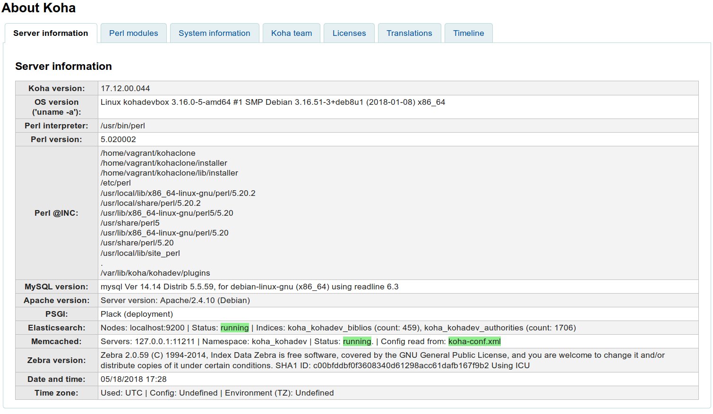
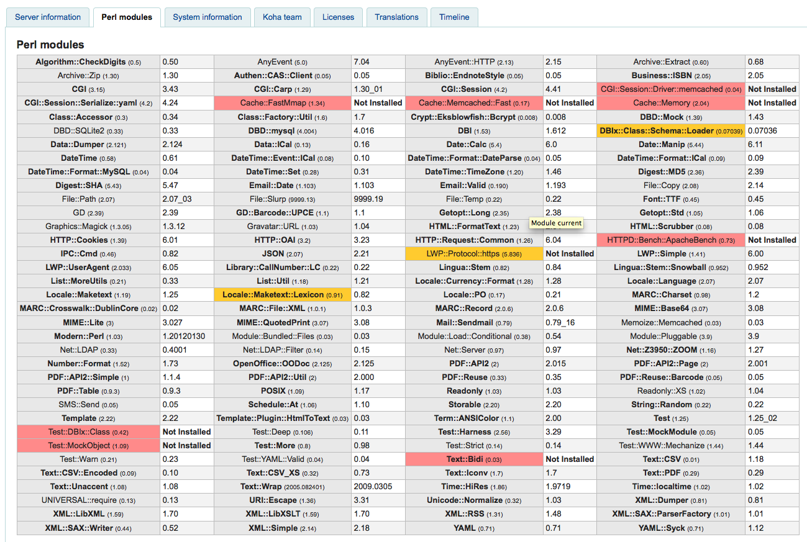

关于 Koha
关于 Koha 会显示重要的服务器以及其他信息。
- 在这里： 更多 > 关于 Koha
服务器信息
在 服务器信息 标签下您会看到 Koha 的版本信息和安装 Koha 的计算机信息。这些信息对于调试错误很重要。当您向您的供货商汇报或者通过其他沟通渠道（邮件、聊天）交流时，这些信息就会显得尤为重要。时区可以通过 Koha 或者服务器配置。对于每个不同事例配置时区的更详细信息，查阅 https://wiki.koha-community.org/wiki/Time_Zone_Configuration

Perl 模块
要使用所有 Koha 功能，您需要保持 Perl 模块随时更新。 Perl 模块 标签会显示 Koha 所有需要的模块以及需要更新的版本等信息。

粗体显示项目为必备，红色高亮显示项目丢失，黄色高亮显示项目需要更新。